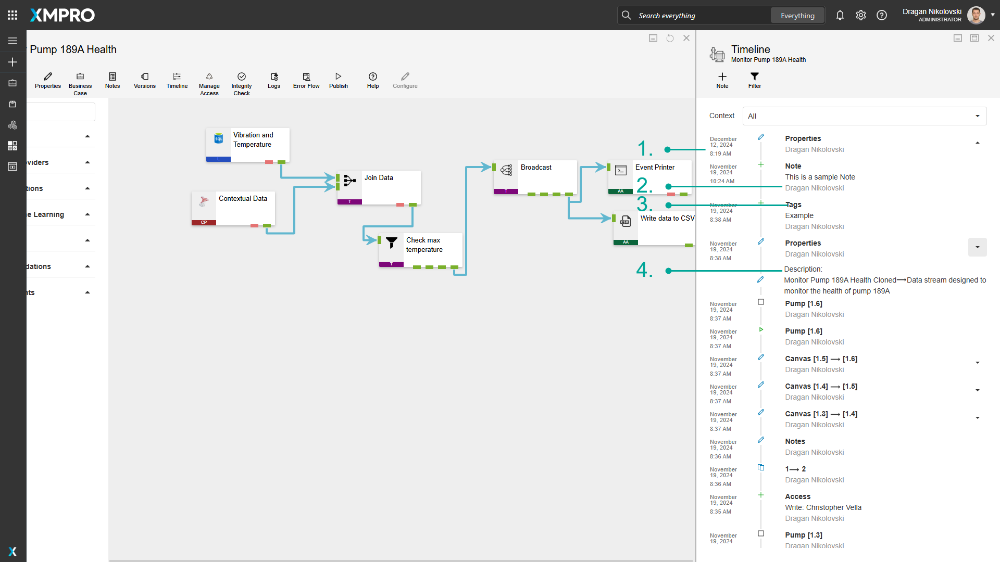

Timeline
History: Timeline
Changes to a Data Stream are recorded and stored in the database so that the user can view a history of any changes made by themselves or others. This can therefore be used as a collaboration tool to see the changes users make (even if it's only a single user), as well as notes about things that need to be addressed.

These changes can be viewed from the canvas by clicking the "Timeline" button. Every time an event occurs, it will be added to a timeline in the form of a block, displaying the following:
- The time and date the change occurred.
- The name of the person who made the change.
- The area where the change was made, for example, "Tags".
- The description of the change.

Adding Notes
Most of the items added to the timeline are added by the system itself, for example, if the version of the Stream increased or if someone changed a setting or configuration of one of the Agents. However, occasionally you may want to add an explanatory notes to the timeline.
Filtering
The timeline can be filtered in two ways: the type of event logged and the context.
Examples of event types are changes made to Agents or version numbers that have been increased. Each type is named after the element on which the change was made. The types of events that can be filtered are as follows:
- Agent
- Attributes
- Canvas
- Configure
- Note
- Publish
- Share
- Tag
- Unpublish
- Version
You can also filter by context, i.e. you can view all changes, or only the events that apply to a specific version. Canvas changes apply to a version, whereas sharing access or changing attributes apply to the data stream as a whole.
Further Reading
Last modified: May 13, 2025